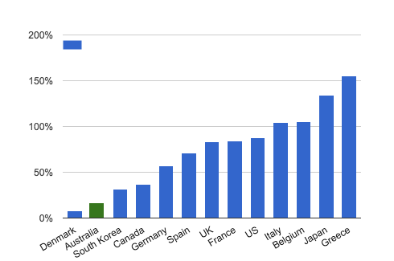
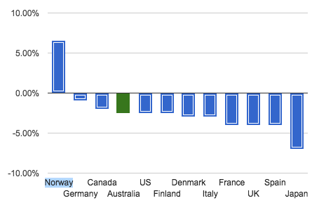
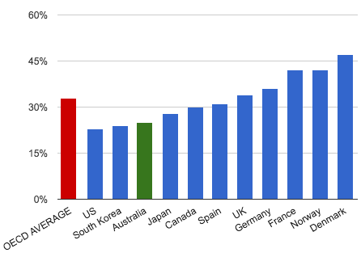

Part Two: The International Comparison
PIC: The earth, or Aus and an arrow to the earth.
So, how does the Australian government’s debt and deficit compare to the budgets of countries around the world?
sourceAs discussed in part one, Australian government net debt is around $250B, or 17% of GDP. By way of comparison here is the net debt as a percentage of GDP of some countries around the world (as at 2014) --
- Greece: 155%
- Japan: 134%
- Belgium: 105%
- Italy: 104%
- US: 88%
- France: 84%
- UK: 83%
- Spain: 71%
- Germany: 57%
- Canada: 37%
- South Korea: 32%
- Australia: 17%
- Denmark: 8%
While some countries have a net positive --
- Bulgaria: +3%
- Sweden: +18%
- Finland: +50%
- Norway: +166%
There are only 12 countries out of a possible 200+ listed as in this category (although, to be fair, there are many countries with sketchy data, and these don’t show up).
Country’s relative deficits are a little harder to pin down, as it is a little easier to come up with an accrued total for the debt than it is to compare the deficits, which can change more year by year.
sourceIn this list (which unfortunately features a range of years) Norway is one of the larger countries running a surplus (6.6%), with Germany at 1%, and most countries in the red - Canada at 2%, near to Australia and the US (2.5%), similar to the US, Finland, Italy and Denmark (3%), France, Spain, and the UK (~4%), and Japan higher at 7%.
So it can be seen that Australia’s net government debt is quite low relative to the debt burdens of other countries, and our budget deficit roughly in the middle ground. This is not a partisan assessment. It also says nothing about trends, and is also not something to be taken lightly. The suggestion that there is a 'budget emergency’ might be harder to square with those figures, but to some degree it’s a matter of your perspective. Ideally these figures can help you to take a sensible perspective.
PIC: a dollar sign being taken to the hospital.
[Wealth[edit]Australia was identified by the Credit Suisse Research Institute as the nation with the second-highest average wealth per adult in 2013.[131] According to a report released in October 2013, the nation's poverty rate increased from 10.2 per cent to 11.8 per cent, from 2000/01 to 2013.[131][132]]
But that’s not the whole of the story either. Another measure which is of interest (if you are a nerd) is that which shows the proportion GDP taken in revenue by the government. Debts and deficits don’t just make themselves. They can be manoeuvred by the government either taking in some more revenue, or spending less. Firstly, let’s have a look at how Australia compares regarding the amount of revenue that the government takes in.
PIC: economics nerd.The Australian government takes in about 22% of GDP in revenue - which is also known as a country’s tax burden. This is what the government has to spend. It is influenced by many factors, including the tax rates, how the economy of the country is performing, and many other factors that feed back into these elements. This is the money that the government has to spend. Higher taxing nations will generally have a higher percentage of government revenue as a proportion of GDP, and lower taxing governments a lower burden as a percentage. So how does Australia stack up in the comparison?
PIC: Australia being weighed down by the word TAX.Of the 35 countries in the OECD, Australia consistently falls in the bottom 5 or 6. The OECD boffin’s calculations put our tax burden closer to 25% (these things are very hard to calculate, and different organisations give different values - but here we are comparing countries, so they have all been calculated the same way for this comparison), and the average in the low to mid 30s (around 33%). The US and Korea have a slightly lower percentage (by one or two points), but most other countries are ahead of us, with notable countries being: Japan 28%, Canada 30%, Spain 31%, the UK 34%, Germany 36%, France and Norway at 42%, and Denmark 47%.
When seen by the light of these calculations, Australia is now not only a country with low levels of debt (and a moderate level of deficit), but it is actually a very low taxing nation. The services that the government provides must come out of that revenue (or the government needs to borrow and increase the debt). If a country wants more or better services, or for a stronger social safety net, then some of the solution could be for the government to take in some more revenue. Some people would argue that the government would only waste that money - but this view needs to be squared against the facts and figures that are seen internationally. The issue is complex, no doubt, but having these facts to hand helps to give shape to the issues involved.
Now that we have some idea of the figures involved, maybe it’s time to see where this money is being spent.. [link]